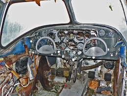

Te acercas cuidadosamente a los restos del avión. El metal está retorcido y aún sale humo de algunas partes. El olor a combustible es fuerte. Entre los asientos destruidos, podrías encontrar suministros útiles. Tal vez la radio aún funcione, lo cual sería tu mejor oportunidad de rescate. Pero el fuselaje podría colapsar en cualquier momento.
